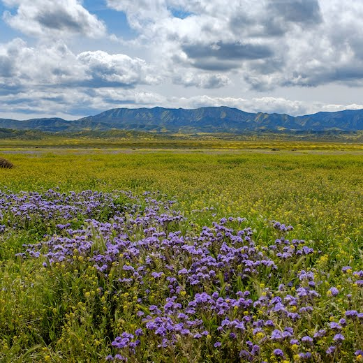

Openscapes Newsletter #10: Fall 2024
Julie Lowndes ![]()
Stefanie Butland
Welcome to Openscapes’ tenth newsletter! If you’re interested in seeing these infrequent updates in your inbox, please sign up here (linked from our connect with us page). And! If you have signed up but did not see this in your inbox, please check your spam folder!
Cross-posted at openscapes.org/blog, nmfs-openscapes.github.io/blog, nasa-openscapes.github.io/news, openscapes.github.io/pathways-to-open-science/blog
Hello all,
We are feeling rejuvenated momentum and hope going into Fall 2024, and we hope this newsletter finds you well. We have had some recent big inflection points.
Openscapes is going to the White House! Openscapes is being recognized at the “Celebration of the OSTP Year of Open Science Recognition Challenge Winners” on September 19. This is a BIG DEAL and we are excited to share the joy with our community. Our September 26 Community Call debriefing The White House trip – which also includes presenting at the Dynamic Convergence Workshop - will continue the celebration as Ileana Fenwick and Julie Lowndes interview each other about their experiences. Please sign up here!
NOAA Fisheries announced a 3-year commitment to open science as part of the Biden-Harris Administration Inflation Reduction Act. Openscapes is thrilled to be part of this work. We have been scaffolding with NOAA Fisheries for the past few years – through 10 Champions Cohorts and developing a cross-agency grassroots mentor community (read next paragraph about a recent publication!). This is such a celebration for the open science community as a whole, a high-profile example of what open science can look like in the government. It means open science directly helping meet the needs of changing oceans by supporting the NOAA workforce focused on climate resilience for fishing communities. It is also a huge celebration for NASA, whom NOAA has been watching and inspired by for their efforts in open science.
Read our peer-reviewed paper co-authored by Openscapes mentors across organizations – including NASA Earthdata, NOAA Fisheries, U.S. EPA, California Water Boards, Pathways to Open Science, and the Fred Hutch Cancer Center - recently published in Ecology & Evolution. From co-author Anna Holder, Cal EPA / Water Boards: “It’s a short read and quite uplifting and inspirational and provides some more insight and what we’re learning as we implement Openscapes across organizations.” https://doi.org/10.1002/ece3.11341; Blog post
Openscapes update from Julie Lowndes, summer 2024 is another big deal. Julie talks about and codifies the Opencapes ethos, the organization’s structure, shares updates on new core team members Liz Neeley and Andy Teucher, how we all work together, and how we are igniting real culture change across science.
2023 marked 5 years of Openscapes! We’ve been reflecting on our momentum and impact, and invite you to share what stands out to you in our Openscapes Survey. We’ve been sharing insights via talks and our submission to the Challenge.gov (the catalyst for The White House visit). We plan to share more at a submitted talk at the AGU Fall Meeting in Washington DC in December.
More highlights
Please read our report on our second annual Pathways to Open Science Program and A letter to researchers that want to make the world a better place, by Dr Antoinette Foster. These were supported in part by a Mozilla Alumni Grant to Openscapes and PREreview
We completed our second annual Reflections program; we will continue to grow and offer this as another entryway to open science.
NASA Openscapes Mentors recently led an ESIP session on Fledging, the culmination of a lot of work, and their work has been featured in many blog posts, webinars, and workshops.
ESIP Summer 2024 conference session, “Onboarding and “fledging”: How NASA Openscapes supports NASA Earthdata users in the Cloud”, by Alexis Hunzinger, Danny Kaufman, Aaron Friesz, Michele Thornton, Andy Barrett, Rhys Leahy, Eli Holmes, Julie Lowndes
NASA Earthdata blog, From Onboarding to Fledging and Beyond—An Openscapes Journey, by Josh Blumenfeld featuring stories from Aronne Merrelli, University of Michigan and Eli Holmes, NOAA Fisheries
First Forays into the Cloud - first “fledging” story from NASA Openscapes!, by Aronne Merrelli, 2023 NASA Champion
2i2c develops shared password access with LP DAAC for NASA Surface Biology and Geology Workshop, by 2i2c Team members Yuvi Panda and Jenny Wong
Learn about and use Surface Water and Ocean Topography (SWOT) Data!, led by Cassie Nickles at the Hacking Limnology Virtual Summit
We developed our first hands-on Quarto + GitHub Contributing Clinic to help Openscapes Mentors upskill; we’ll iterate based on what we learned.
We’ve led 24 Champions Cohorts to date! So exciting to see new cross-agency connections developing and amplifying expert voices as more and more past Champions become Mentors and Instructors and share their open science stories more broadly.
3rd NASA Cohort. Summary post, NASA Champions 2024: Data strategies for when to use cloud, coding strategies for parallelization, & first examples of big science in the Cloud, by NASA Openscapes Mentors.
California Water Boards forking Openscapes is building momentum. They led their 3rd & 4th Cohorts in 2024, reusing & remixing lessons, and using and contributing back to the Kyber R package we use to create our infrastructure for delivering Champions Cohorts.
Talks, workshops, conferences (see Events)
Recordings and slides are linked from the posts below.
May 14: How the NASA Openscapes community supports Earthdata users migrating workflows to the Cloud, at NOAA Enterprise Data Management (EDMW) Workshop
June 3: Community Call: Sharing Climate Data. A Conversation with Creative Commons and Openscapes, with recording & collaborative notes doc
July 23, 2024: ESIP - highlight above
August 7: Invited virtual talk for the NIH Biomedical Informatics Coordinating Committee (BMIC), “How Openscapes supports teams in open science: stories of how we work”, by Julie Lowndes
August 13: posit::conf talks and strengthening community connections. Stefanie Butland talked about how we use the Kyber R package to connect Google Sheets, RMarkdown, GitHub, and Agenda docs for open education and Luis Lopez talked about earthaccess: Simplifying Earth Science in The Cloud. The conference was a wonderful opportunity to lay down more in-person connections among Mentors from NMFS Openscapes and NASA Openscapes and this wonderful Posit community.
August 22: Openscapes at California Department of Water Resources Environmental Coordination Committee Open Forum, Openscapes: Kinder science for future us, by Julie Lowndes, Devan Burke, Anna Holder.
September 10: Forking as a Worldview: A big idea that frames Openscapes thinking. Julie Lowndes gave a plenary talk at NASA’s internal PI Planning meeting and talked about forking as reusing what works in new places, with examples of earthaccess package development forking the open source software dev approach into government, and NASA Openscapes and then NOAA Fisheries Openscapes forking open source frameworks to tackle big challenges (cloud migration, data modernization). And it turns out, forking is the first step of the Openscapes Flywheel :)
Thank you for reading, and for all that you do. Read more about what this amazing community has been up to via blog posts, talks on our media page and events page.

Citation
@online{lowndes2024,
author = {Lowndes, Julie and Butland, Stefanie},
title = {Openscapes {Newsletter} \#10: {Fall} 2024},
date = {2024-09-17},
url = {https://openscapes.org/blog/2024-09-17-news-sep-2024/},
langid = {en}
}